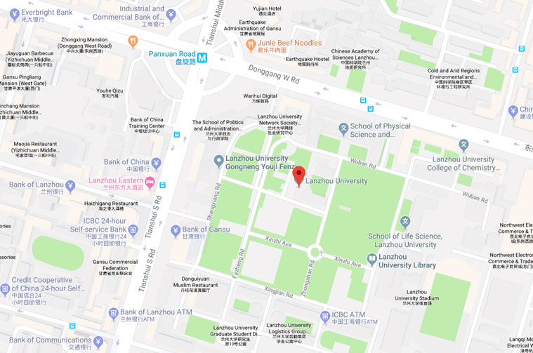

This workshop will be held at Lanzhou University, Lanzhou, Gansu, China. Getting there:
By car: (Main campus of LZU)

Airport:
Lanzhou Zhongchuan International Airport (LHW) is about 75 km from downtown Lanzhou. You can take a taxi, a bus or a train to LZU.
Taxi is available near the exit of airport. The charge of taxi from the airport to LZU is roughly 200 RMB. It will take you about 1 hour.
To travel by train, take the inter-city railway from the airport to Lanzhou station. Then take a taxi or bus (No.1, No.10, No.16, No.110, No.131 and get off at Lanzhou University station, the price is 1 RMB) from Lanzhou station to LZU. It will take 40-50 minutes if you come by train, and from Lanzhou station to LZU will cost less than 10 minutes.
The third option is to take Airport Bus. You can choose the line going to LZU. The campus is opposite to the bus stop. The bus ticket is 30 RMB and it will take you 70-80 minutes.
Train Station:
After arriving at Lanzhou West Railway Station, taking a taxi to the hotel is the most convenient. The cost is about 25 RMB and takes 20-30 minutes.